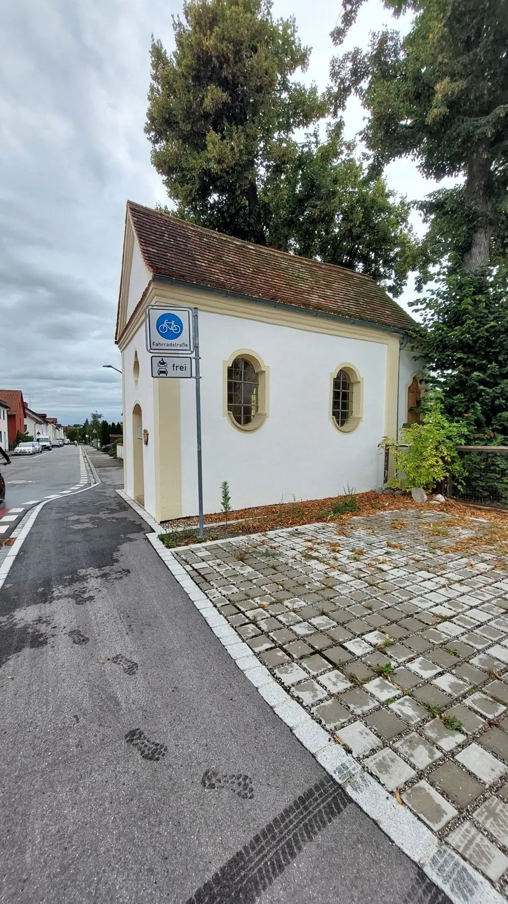
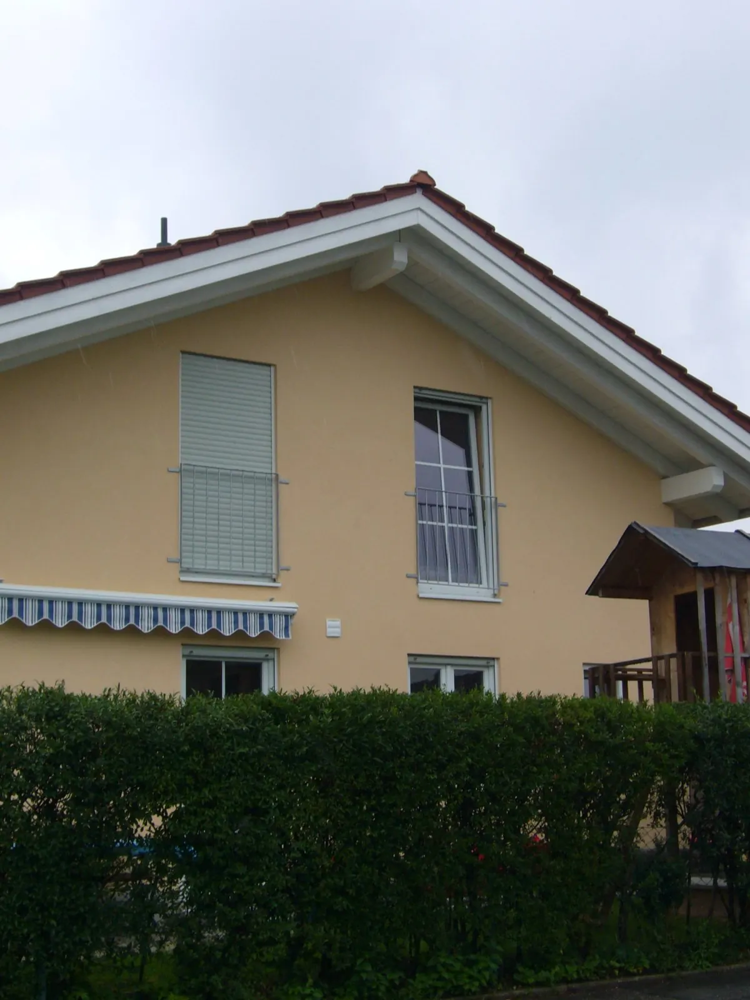
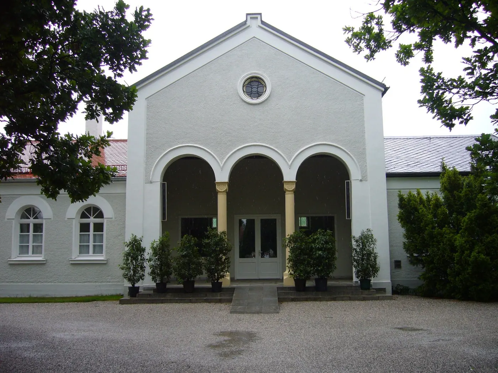
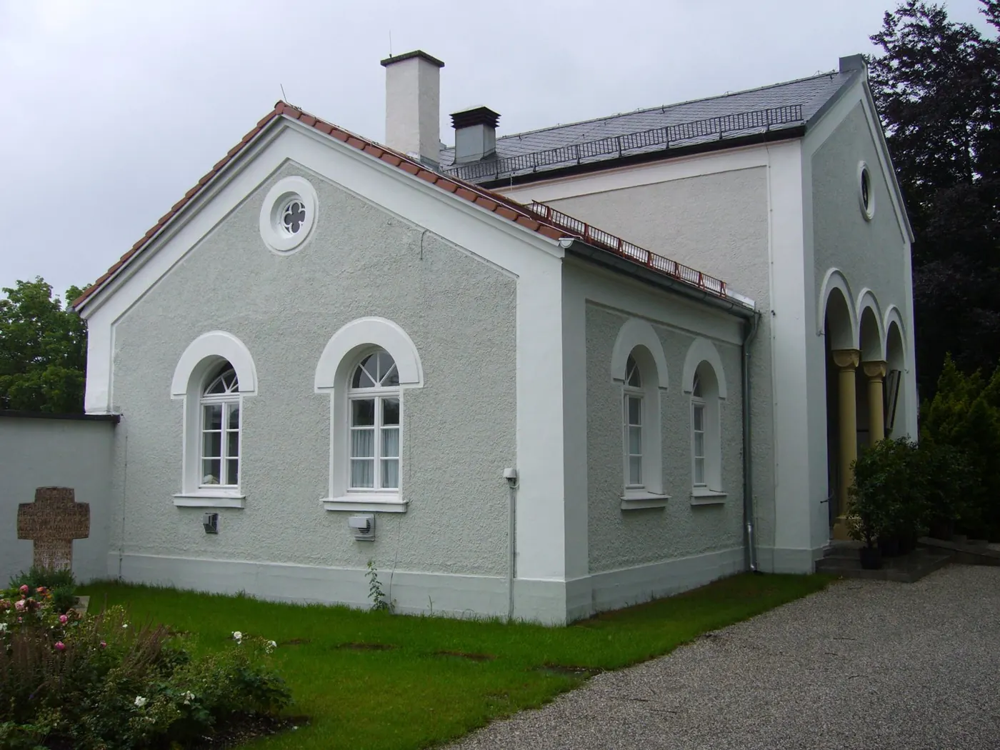

Einfamilienhäuser
Unser Schwerpunkt. Von der kompletten Fassade bis zum einzelnen Giebel.
Farbe, die zum Haus passt — nicht zum Katalog.
Eine Fassade wird einmal in fünfzehn Jahren gestrichen. Deshalb schauen wir uns vorher an, was da ist: Untergrund, Ausrichtung, Nachbarbebauung und wie das Licht über den Tag darauf fällt.
Wir gestalten Fassaden in Weilheim und den umliegenden Gemeinden — nach Ihrem Wunsch oder nach Beratung, passend zu Baustil und Architektur.

Unser Schwerpunkt. Von der kompletten Fassade bis zum einzelnen Giebel.
Wir legen Muster an der Wand an, bevor die ganze Fassade steht. Farbe wirkt am Haus anders als auf dem Fächer.
Reinigen, ausbessern, grundieren. Ein Anstrich hält nur so lange wie der Untergrund darunter.
Kapellen, Vereinsheime, Gasthäuser: Farbe, die zum Alter des Gebäudes passt.
Wir sagen vorher, wie lange wir stehen und wann Sie Ihr Haus zurückbekommen.
Abgedeckt wird vorher, aufgeräumt wird nachher — Beet, Terrasse und Auto bleiben, wie sie waren.





Was Kunden zum Thema Fassade am häufigsten wissen wollen.
Ihre Frage steht nicht dabei? Rufen Sie an — wir sind selbst am Telefon.
0881 4667 anrufenJe nach Untergrund, Wetterseite und Farbsystem rund 10 bis 15 Jahre. Wir sagen Ihnen beim Termin, was Ihre Fassade braucht — manchmal reicht eine Teilfläche.
Ja. Wir legen Musterflächen direkt an Ihrer Wand an. Auf dem Farbfächer wirkt ein Ton anders als an einem Haus mit Süd- oder Nordseite.
Ja, ausdrücklich. Ein Giebel, eine Wetterseite oder ein Sockel sind für uns ein normaler Auftrag — wir arbeiten zu dritt und halten Projekte bewusst überschaubar.
 HolzschutzanstricheDamit Balkon, Fenster und Vordach die nächsten Winter überstehen.Mehr erfahren
HolzschutzanstricheDamit Balkon, Fenster und Vordach die nächsten Winter überstehen.Mehr erfahren InnenraumgestaltungAm Abend ist der Raum wieder Ihrer.Mehr erfahren
InnenraumgestaltungAm Abend ist der Raum wieder Ihrer.Mehr erfahren TapezierarbeitenMan sieht es an den Stößen.Mehr erfahren
TapezierarbeitenMan sieht es an den Stößen.Mehr erfahren BeschriftungenWas eine Klebefolie nicht kann.Mehr erfahren
BeschriftungenWas eine Klebefolie nicht kann.Mehr erfahren SonderarbeitenWenn es das von der Stange nicht gibt.Mehr erfahrenIhr ProjektNicht dabei? Wir schauen es uns trotzdem an — ein Anruf genügt.Projekt anfragen
SonderarbeitenWenn es das von der Stange nicht gibt.Mehr erfahrenIhr ProjektNicht dabei? Wir schauen es uns trotzdem an — ein Anruf genügt.Projekt anfragen
Rufen Sie an oder schreiben Sie uns — wir schauen es uns vor Ort an.